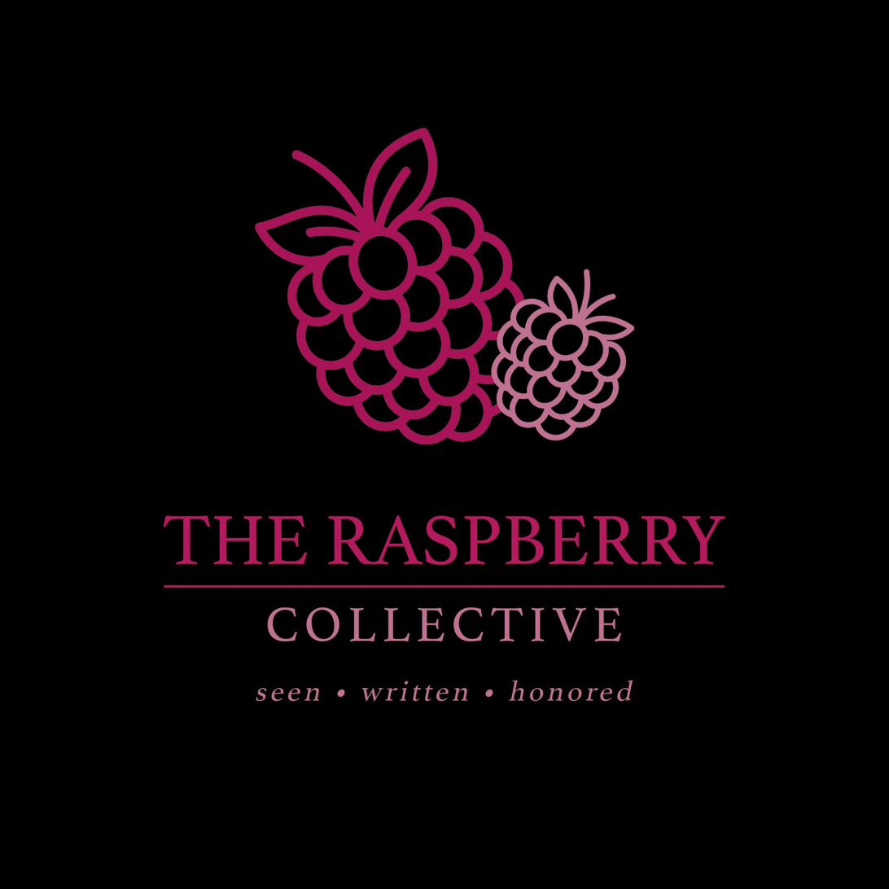
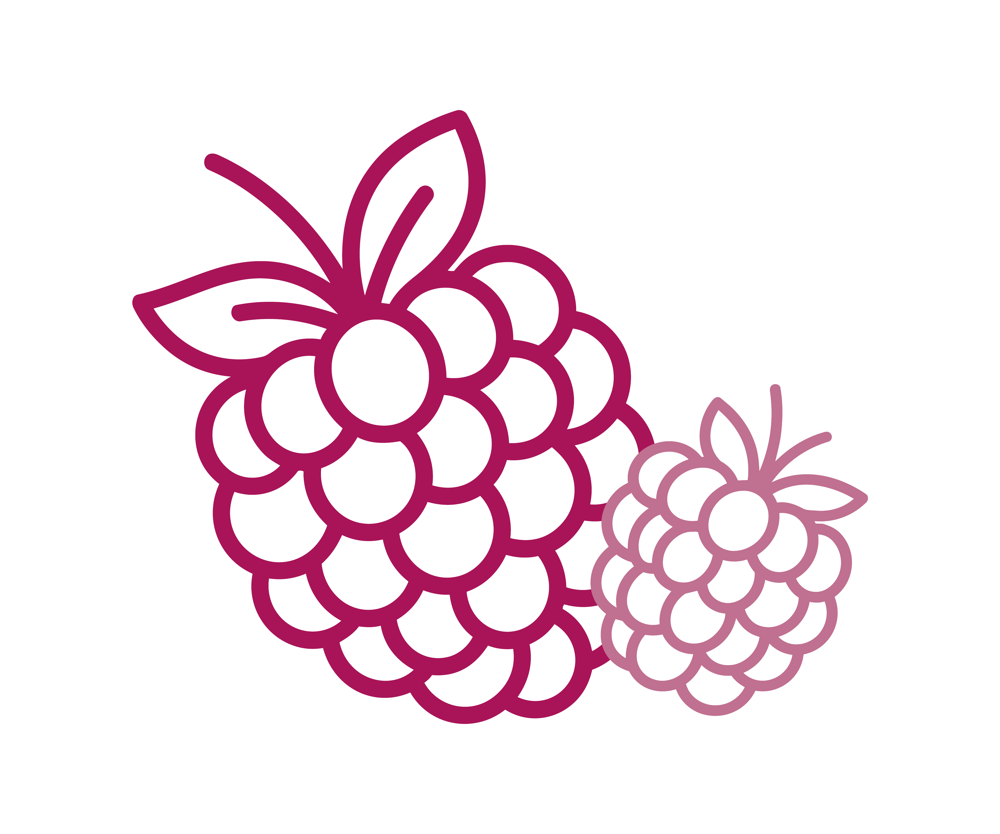

No loss should go unwitnessed. No woman should grieve alone.
We bring words of comfort directly to women in their darkest hour — a handwritten note, a journal, and poetry that dares to say what grief sometimes cannot.
seen · written · honoredour belief
Grief witnessed is grief transformed
Every year, millions of women experience miscarriage. Most go home from the hospital with medical discharge papers and very little else — no acknowledgment of the weight they are carrying, no words to hold onto. We exist to change that.
Seen
We show up at the moment grief is most raw and isolation most acute.
Written
We hand women language for a loss the world too often leaves unspoken.
Honored
We affirm that what was loved mattered — and will not be forgotten.
what we do
Human resources, not clinical ones
We partner with hospitals and maternity care units so that every woman who experiences pregnancy loss receives a curated package: a handwritten note of comfort, and a journal to hold her own words, feelings, and memories in the days and weeks that follow.
These are not clinical resources. They are human ones — the note slipped under the door that says we know you are in there.

read the words
The writing that started it all
Our founder brings a personal, poetic voice to the miscarriage experience — building a community of women who have felt unseen in their grief and are hungry for language that finally tells the truth.